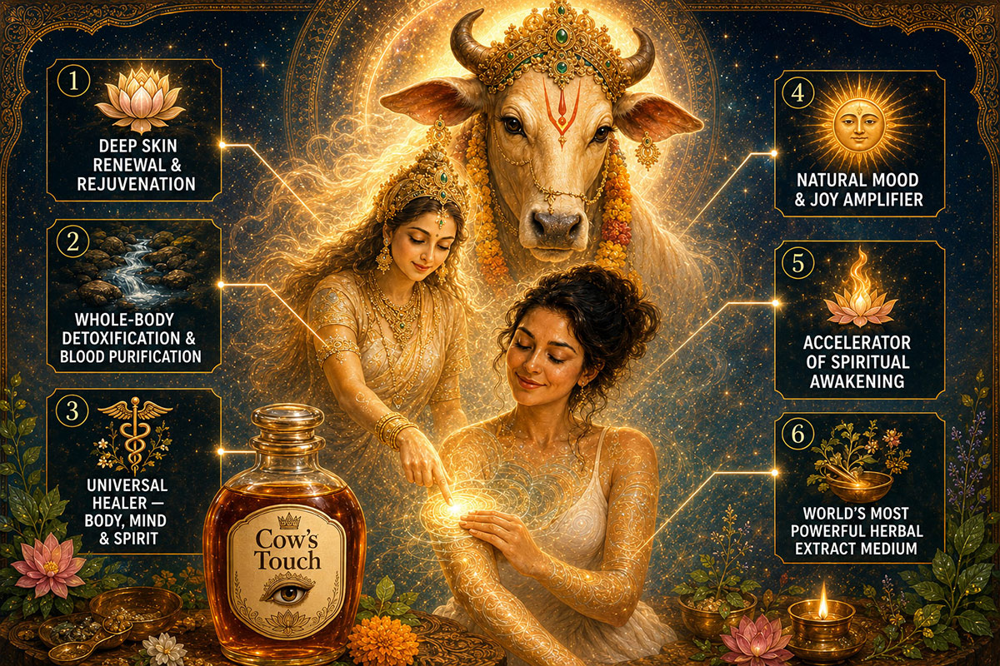
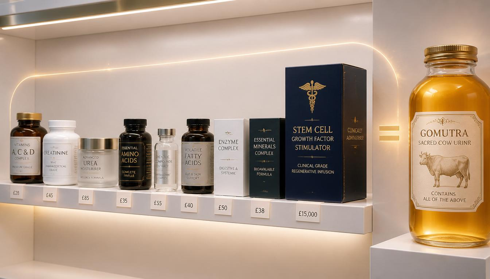
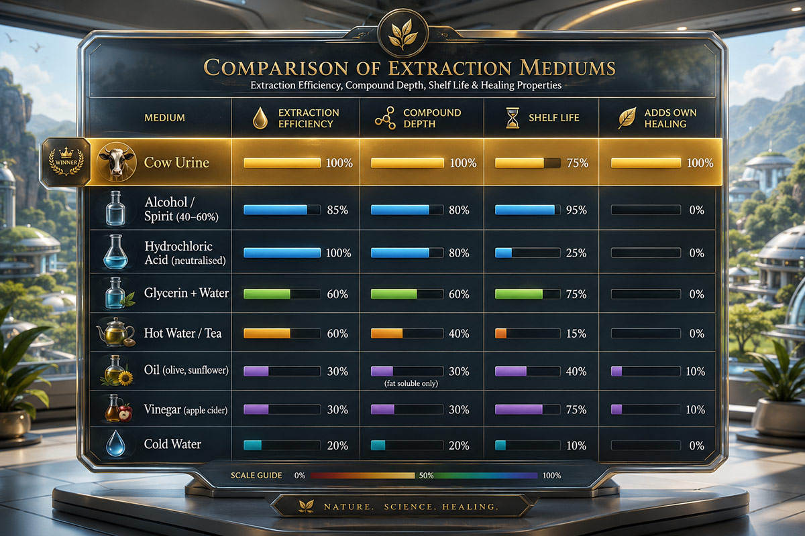
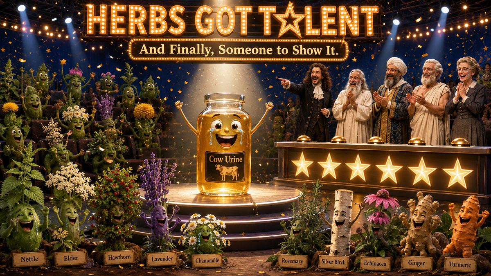
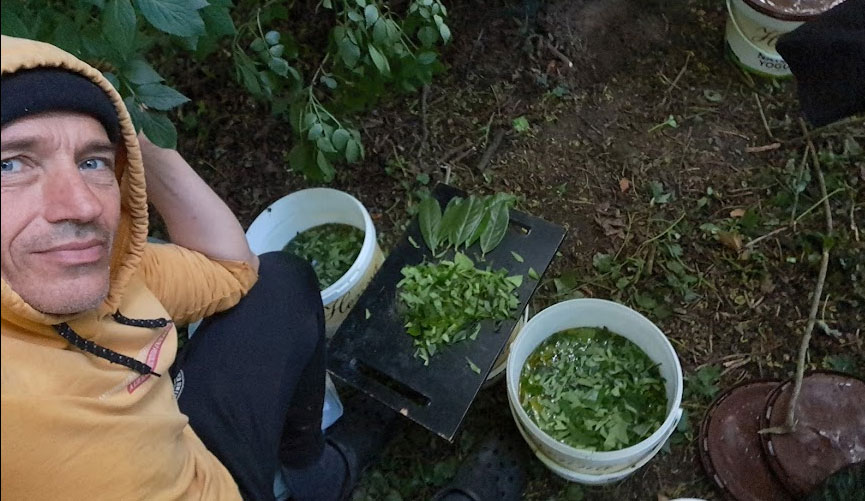
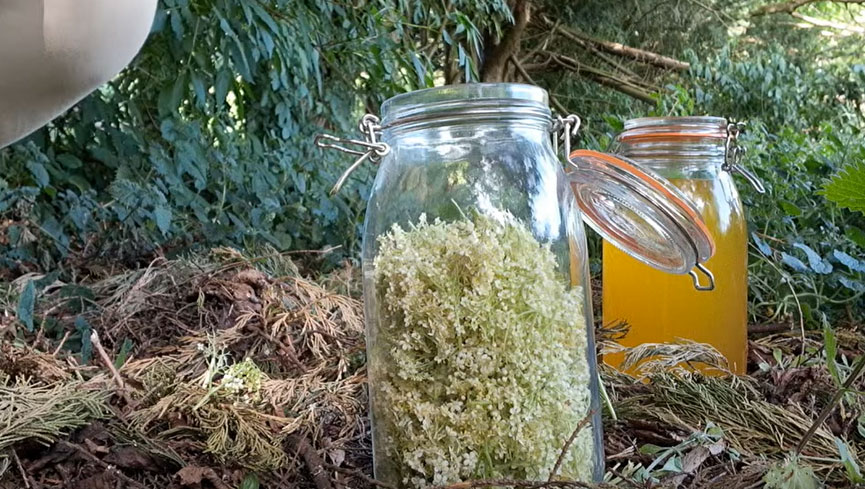

The Elixir of Renewal
More concentrated, more active — the practice many are drawn toward once the dung has done its early work.
Cow dung is the earth's first medicine — free, abundant, and immediate. Cow urine is its natural counterpart: more concentrated, more active, the practice many are drawn toward once the dung has done its early work of grounding and release.
If dung teaches the body to let go of what no longer serves it, urine teaches the body to rebuild. Rich in urea, minerals, enzymes, and growth factors, gomutra works on tissue at a deeper level — hydrating, repairing, and activating renewal from within. Where dung's effects are felt as a release, urine's effects are felt as a lift: greater clarity, sustained energy, and a refinement of the nervous system that, according to five thousand years of Vedic tradition, opens the door to deeper states of awareness.
Each represents a distinct, documented effect of cow urine applied to the skin. Together they form the most complete single-substance case for healing currently known to this author.
Cow urine contains urea at two to three times the concentration found in human urine — the same active compound prized in high-end dermatological creams, but here delivered in its natural, living form alongside a full spectrum of minerals, enzymes, and vitamins. Applied to the skin, it softens, hydrates, and gently exfoliates, while deeper compounds support the regeneration of new tissue.
The skin is the body's largest organ of elimination, and cow urine works with it. Its natural compounds help draw out accumulated toxins and metabolic waste through the pores, easing the load on the liver and kidneys. Ayurvedic tradition has long described cow urine as a blood purifier — a substance that addresses the underlying load the body is carrying, rather than masking its symptoms.
Vedic tradition has never separated the physical from the subtle. The same application that soothes inflamed skin or eases joint pain also affects mental clarity and emotional steadiness. Gomutra is a genuinely universal healer: one preparation working at every level simultaneously.
One of the most immediate effects is also the least discussed: a noticeable lift in mood, often within minutes. Compounds identified in cow-derived substances interact with the body's own mood-regulating pathways, producing a gentle, sustained sense of wellbeing rather than a sharp artificial spike.
Across five thousand years, sages and naturopaths have described gomutra as a substance that refines the nervous system — making it more receptive to subtle states that ordinarily pass unnoticed. In Vedic terms it is sattvic: purifying, calming, and conducive to higher states of awareness. Many practitioners report that meditation deepens and intuition sharpens with regular use.
Every herbalist knows the medium used to extract a plant's properties determines how much of its healing potential is released. Cow urine extracts both water-soluble and fat-soluble compounds simultaneously, achieves full extraction far faster than alcohol tinctures, and contributes its own extensive therapeutic properties to whatever it carries.
Cow urine occupies a central place in Ayurvedic medicine and Vedic ritual life — not as a curiosity, but as one of the most frequently prescribed substances in the classical texts.
"Gomutra is described as a supreme medicine, effective against skin diseases, fever, abdominal disorders, anaemia, and eye diseases, and as a purifier of the blood and a restorer of the nervous system." Charaka Samhita & Sushruta Samhita, foundational Ayurvedic texts, c. 600 BCE
"Among all medicines for all diseases, gomutra is the best remedy. Cow urine is holy, pure, a destroyer of all diseases, and a great promoter of intellect, memory, and digestive power." Atharva Veda
One of the most striking textual foundations for urine therapy in the Vedic tradition is the Shivambu Kalpa Vidhi, in which Lord Shiva explains to Parvati the practice of Shivambu (Amaroli) — the drinking and application of one's own urine — describing it as a practice capable of curing disease, slowing ageing, sharpening the senses, stabilising the mind, and awakening dormant spiritual capacities.
If human urine, produced by an ordinary human body, is described as capable of this when used with sincerity and discipline, the natural question follows: what might be expected from cow urine — a substance research has shown to be two to three times richer in urea, minerals, enzymes, and bioactive compounds than human urine?
"Camel urine is strongest. Then cow urine. Then human urine, which is mildest and safest. Each has its purpose — use the strongest for severe illness, the mildest for daily maintenance and spiritual refinement." Ibn Sina (Avicenna), The Canon of Medicine, 11th century CE
Cow urine is one of the most biochemically dense fluids found in nature. Its foundation is urea, present at two to three times the concentration found in human urine, driving deep tissue hydration, cellular regeneration, and the penetration of accompanying compounds into living tissue.

Everything on this shelf is already inside the jar.
In vivo studies have shown hepatoprotective effects — reducing liver enzyme levels and restoring normal liver histology in cases of induced liver damage — as well as antidiabetic activity, through a complex interplay of bioactive compounds acting on insulin secretion, glucose uptake, and cellular metabolism.
Most remarkably, a 2025 peer-reviewed study examined the effect of cow urine on human dental pulp stem cells and found measurable impact on stem cell differentiation, anti-ageing activity, anti-oxidative capacity, and angiogenesis — the formation of new blood vessels fundamental to tissue repair.
Stem cell therapy clinics currently charge between £5,000 and £25,000 per intravenous infusion, on the premise that growth factors trigger the body's own regenerative processes. Matured cow urine — held 24 to 48 hours — has been associated with measurable concentrations of the same category of compound. The mechanism being chased at £15,000 a session may already be sitting in a substance available for free.
Note: Research on urinary growth factors and stem cell effects is at an early stage. The figures and findings above summarise published laboratory and in vivo research; they are not a guarantee of outcome for any individual.
Every herbalist knows that the medium used to extract a plant's properties determines how much of its healing potential is actually released. Cow urine extracts both water-soluble and fat-soluble compounds simultaneously, achieves full extraction in a fraction of the time required by alcohol tinctures, and — uniquely — contributes its own extensive therapeutic properties to whatever it carries.

Cow urine extracts both water-soluble and lipid-soluble compounds simultaneously, achieves full extraction in 12–24 hours versus roughly 4 weeks for alcohol, and acts as a biological delivery vehicle the body already recognises.

In 2025 I was invited to a project based near the Hare Krishna Temple, Bhaktivedanta Manor, in Watford. I became a volunteer at the cow farm on the temple grounds, and the practice began again — this time extending properly into cow urine for the first time.
The persistent smell of urea was, for years, the single reason I had set urine therapy aside. I spent ten days testing essential oils — camphor, tea tree, grapefruit, and lavender. While they reduced the smell significantly, I wanted to maintain the practice two to three times a day without interfering with social interactions.
I developed what I now call the Two-Layer System: the cow urine, infused with a few drops of essential oil, is applied first and left to dry completely; a second layer — a few drops of essential oil in a water or oil base — is then applied directly over the dried first layer, sealing it. A thin layer of Gopi Chandan clay (the same clay Krishna devotees use for the traditional forehead mark) has proven the most effective seal of all.
Once the odour problem was sufficiently solved, I turned to using cow urine as an extraction medium for foraged British herbs. Drawing on historical formulas from Nicholas Culpeper's Complete Herbal (1653), Maud Grieve's A Modern Herbal (1931), and the British Herbal Pharmacopoeia — all of which explicitly recommend urine as an extraction medium for topical use — I collected fresh cow urine each morning and foraged nettle, oak, ash, elder, hawthorn, silver birch, and a wide range of other local plants.


I had been dealing with a stubborn umbilical infection for nearly a year. Months of cow dung application had produced no change — yet within two weeks of targeted cow urine application, it reduced by 80% in both size and intensity.
The broader effects ran deeper than the physical: old emotional patterns surfaced with unexpected force, bringing intense crying episodes and a quality of inner clearing I had not experienced before, followed the next morning by a flood of creative energy. The shift was visible enough that my mother — on a video call from another country, with no knowledge of what I was doing — stopped mid-conversation to tell me my eyes had the same radiant glow they had carried when I was a small child.
Cow urine can be used fresh or matured — maturation ranging from 24 to 48 hours for maximum growth-factor concentration, all the way through to several months or even a year or more for progressively deeper therapeutic and spiritual effects — applied directly to the skin, combined with essential oils using the Two-Layer System described above, or used as a herbal extraction medium.
It can also be combined with cow dung — either mixed together directly into a single preparation, or applied in a layered sequence with urine first, a thin layer of dung over it, then sealed — for those wanting the combined effect of both gifts.
The full step-by-step guide — sourcing, odour management, internal use considerations, and the complete herbal extraction method — lives on the dedicated How to Apply page.
How to Apply →